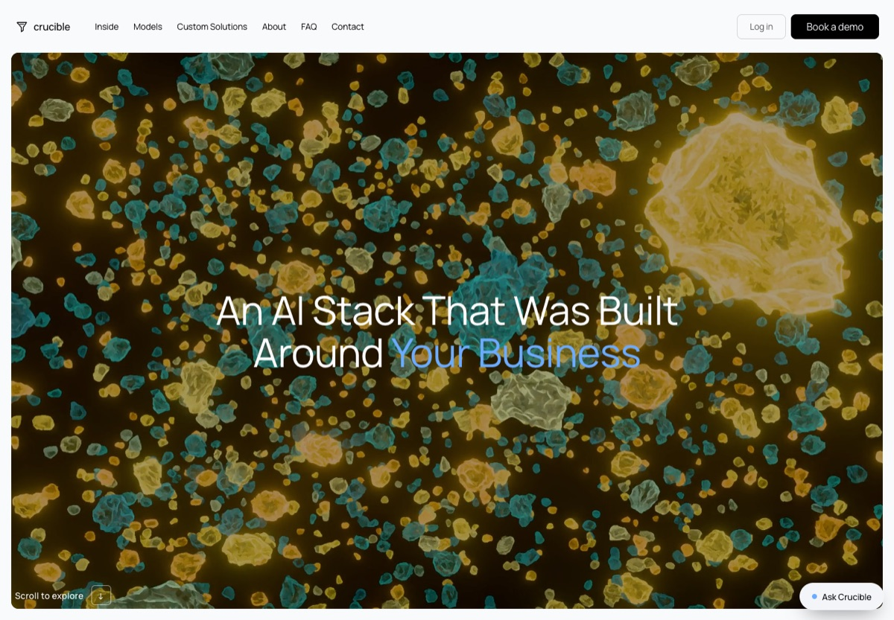

Crucible and Keep
Two concept sites for the same fictional business, a private AI box installed in your building. Same features on both: the scroll story, the model scorecard, model reports, custom AI, about, FAQ, contact and a chat widget.

The original · enterprise
Crucible — the data foundry
Scale.com proportions, indigo-black, thin display type. Built for procurement and security teams at larger companies.
Open Crucible →modelscustom solutionsabout

The sibling · small business
Keep — a box under your desk
Light, blue and orange and yellow, Young Serif. A founder named Sam, a 30-day pilot and three boxes to pick from.
Open Keep →modelscustom AIpilot